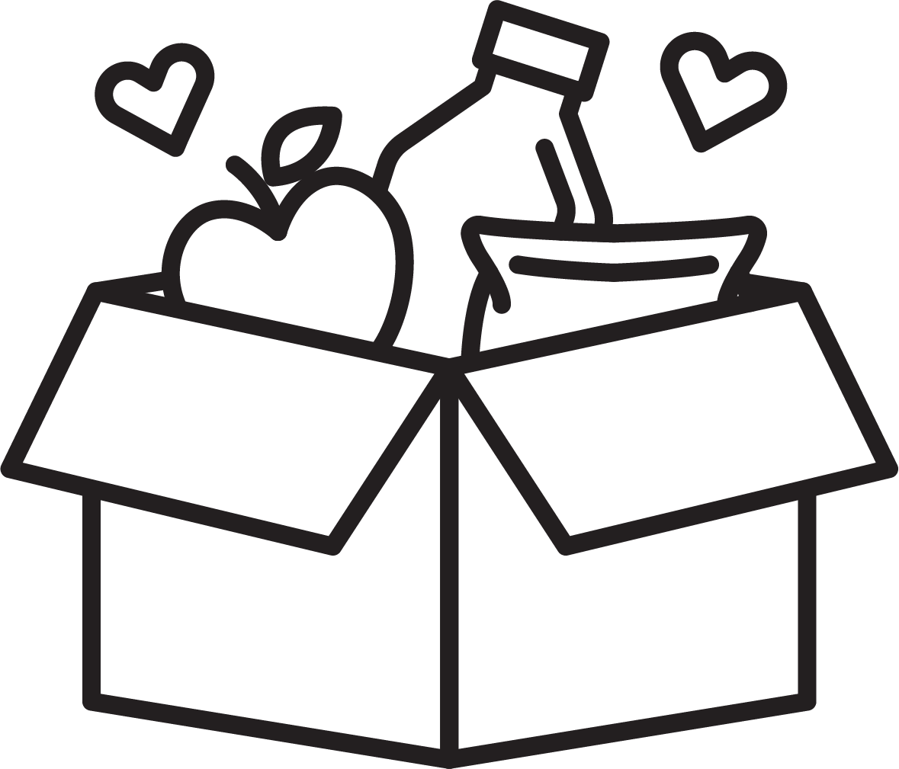
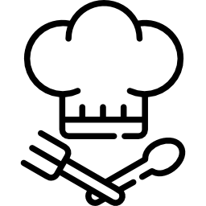

Great Choice!

Tap here to use the other recipe search.
Enter at least 10 ingredients you have available below.
Great Choice!
Enter at least 10 ingredients you have available below.
Great Choice!
Enter any ingredients you would like to use below.
Tap this icon to generate recipe ideas that only use ingredients you have available!
Tap this icon to generate chef-designed recipes based on your chosen ingredients!